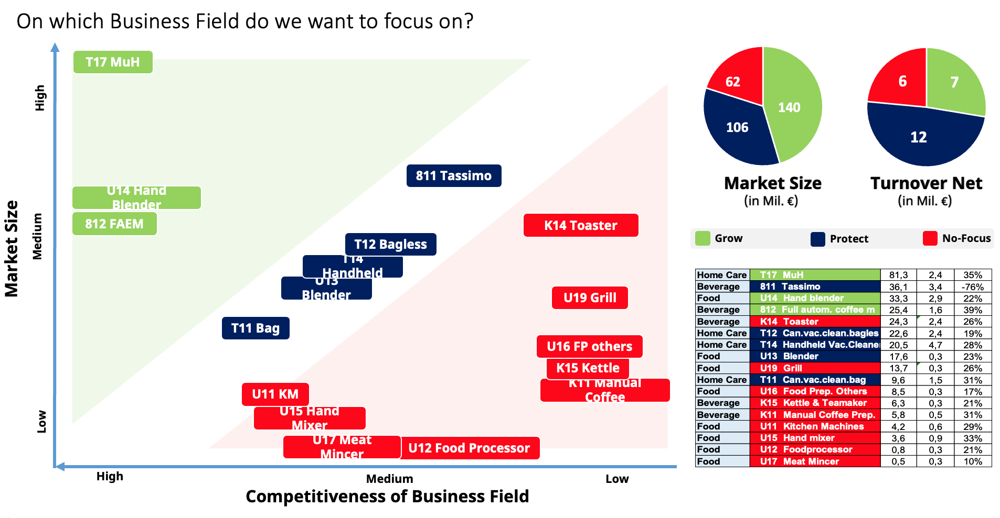

The strategic challenge
The Small Domestic Appliance division was launching products in a fragmented way. Marketing, Sales, and Supply Chain were often out of step with each other, which put campaigns and stock levels at risk.
What the project delivers
The project introduces a Launch Readiness Assurance standard operating procedure, or SOP, that brings Marketing, Sales, and Supply Chain onto one shared timeline for every product launch.
To track this in practice, a dual dashboard system was built using Power BI and SAP Analytics Cloud. This gave every team the same live view of launch status, which improved campaign effectiveness and reduced write off exposure on unsold stock.
Tools and way of working
Competencies applied
Dashboard gallery

The global dashboard tracking sell-in, Amazon sell-out, website traffic, and reviews for one product launch.

Illustrative example of a Grow, Protect, No focus matrix, used to prioritise where to grow, protect or step back from across the product portfolio, plotted by market size against competitiveness.